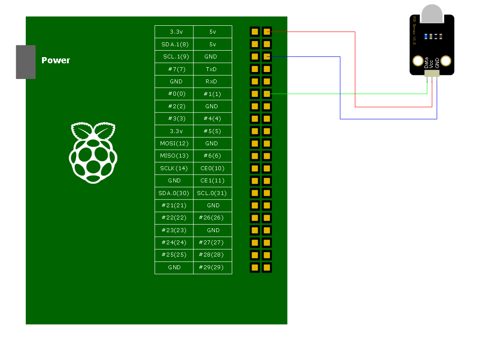

PIR Motion 센서는 신호가 감지되면 3V의 출력을 내는 센서이다. 따라서 Raspberry Pi의 GPIO를 이용하면 신호를 읽을 수 있다. 센서에 대한 자세한 사양은 다음 홈페이지를 참고하기 바란다. http://www.dfrobot.com/index.php?route=product/product&product_id=1140&search=PIR&description=true
테스트에 사용된 하드웨어 구성은 다음과 같다.
GPIO Library는 wiringPi Library를 필요로 한다. 설치되어 있지 않다면 우선 wiringPi를 설치하도록 하자.
pi@ctrlpi3 ~$ clone git://git.drogon.net/wiringPi
Cloning into 'wiringPi'...
remote: Counting objects: 657, done.
remote: Compressing objects: 100% (599/599), done.
remote: Total 657 (delta 476), reused 95 (delta 58)
Receiving objects: 100% (657/657), 247.61 KiB | 94 KiB/s, done.
Resolving deltas: 100% (476/476), done.
다운받은 wiringPi를 빌드한다.
pi@ctrlpi3 ~$ cd wiringPi pi@ctrlpi3 ~/wiringPi$ ./build
wiringPi가 준비되었으면 siteLibs로 이동하자. siteLibs가 없다면 svn에서 내려 받는다. 만약 siteLibs가 있다면 GPIOLibRasp폴더가 있는지 확인 한 후 없다면 마찬가지로 svn에서 내려 받는다.
pi@ctrlpi3 ~/epics/R3.14.12.4 $ svn co svn://10.1.5.14/raon/trunk/siteLibs
siteLibs/GPIOLibRasp 폴더로 이동한 후 make를 실행한다.
pi@ctrlpi3 ~/epics/R3.14.12.4 $ cd siteLibs/GPIOLibRasp pi@ctrlpi3 ~/epics/R3.14.12.4/siteLibs/GPIOLibRasp $ make
make가 완료되면 siteLibs/lib/linux-arm 폴더에 libraspGPIO.a 와 libraspGPIO.so 파일이 생성된다.
이제 siteApps폴더로 이동한 후 App폴더 하나를 만든다. siteApps폴더가 없다면 svn으로 부터 내려 받는다.
pi@ctrlpi3 ~/epics/R3.14.12.4 $ svn co svn://10.1.5.14/raon/trunk/siteApps
siteApps 폴더안에 gpio폴더를 생성한 다음 기본 ioc 구조를 만든다.
pi@ctrlpi3 ~/epics/R3.14.12.4 $ cd siteApps pi@ctrlpi3 ~/epics/R3.14.12.4/siteApps $ mkdir gpio pi@ctrlpi3 ~/epics/R3.14.12.4/siteApps $ cd gpio pi@ctrlpi3 ~/epics/R3.14.12.4/siteApps/gpio $ makeBaseApp.pl -t ioc gpio pi@ctrlpi3 ~/epics/R3.14.12.4/siteApps/gpio $ makeBaseApp.pl -i -t ioc gpio Using target architecture linux-arm (only one available) The following applications are available: gpio What application should the IOC(s) boot? The default uses the IOC's name, even if not listed above. Application name? gpio
gpioApp/src 폴더로 이동하면 gpioMain.cpp와 Makefile이 있다. Makefile에 다음 코드를 추가한다.
Makefile TOP=../.. include $(TOP)/configure/CONFIG USR_INCLUDES += -I$(RAON_SITELIBS)/include USR_DBDFLAGS += -I$(RAON_SITELIBS)/dbd USR_INCLUDES += -I$(EPICS_EXTENSIONS)/include USR_INCLUDES += -I/home/pi/wiringPi/wiringPi wiringPi_DIR += /home/pi/wiringPi/wiringPi /home/pi/wiringPi/devLib raspGPIO_DIR += $(RAON_SITELIBS)/lib/$(T_A) #---------------------------------------- # ADD MACRO DEFINITIONS AFTER THIS LINE #============================= #============================= # Build the IOC application PROD_IOC = gpio # gpio.dbd will be created and installed DBD += gpio.dbd # gpio.dbd will be made up from these files: gpio_DBD += base.dbd # Include dbd files from all support applications: #gpio_DBD += xxx.dbd gpio_DBD += devGPIO.dbd # Add all the support libraries needed by this IOC #gpio_LIBS += xxx gpio_LIBS += raspGPIO gpio_LIBS += wiringPi # gpio_registerRecordDeviceDriver.cpp derives from gpio.dbd gpio_SRCS += gpio_registerRecordDeviceDriver.cpp # Build the main IOC entry point on workstation OSs. gpio_SRCS_DEFAULT += gpioMain.cpp gpio_SRCS_vxWorks += -nil- # Add support from base/src/vxWorks if needed #gpio_OBJS_vxWorks += $(EPICS_BASE_BIN)/vxComLibrary # Finally link to the EPICS Base libraries gpio_LIBS += $(EPICS_BASE_IOC_LIBS) #=========================== include $(TOP)/configure/RULES #---------------------------------------- # ADD RULES AFTER THIS LINE
gpioApp/Db 폴더로 이동 후 gpio.db 파일을 만들고 Makefile에 추가해 준다.
gpio.db
record(bi, "inp1")
{
field(DTYP, "GPIO")
field(SCAN, "1 second")
field(INP, "@1")
field(ONAM, "ON")
field(ZNAM, "OFF")
}
Makefile TOP=../.. include $(TOP)/configure/CONFIG #---------------------------------------- # ADD MACRO DEFINITIONS AFTER THIS LINE #---------------------------------------------------- # Optimization of db files using dbst (DEFAULT: NO) #DB_OPT = YES #---------------------------------------------------- # Create and install (or just install) into/db # databases, templates, substitutions like this #DB += xxx.db DB += gpio.db #---------------------------------------------------- # If .db template is not named *.template add # _template = include $(TOP)/configure/RULES #---------------------------------------- # ADD RULES AFTER THIS LINE
gpio폴더로 이동한 후 make를 실행한다. make가 완료되면 bin/linux-arm 폴더에 gpio 파일과 db폴더에 gpio.db 파일이 생성된다.
ioc를 실행하기 위해 iocBoot/iocgpio 폴더로 이동하여 st.cmd파일에 gpio.db를 추가해 준다.
st.cmd
#!../../bin/linux-arm/gpio
## You may have to change gpio to something else
## everywhere it appears in this file
< envPaths
cd ${TOP}
## Register all support components
dbLoadDatabase "dbd/gpio.dbd"
gpio_registerRecordDeviceDriver pdbbase
## Load record instances
#dbLoadRecords("db/xxx.db","user=piHost")
dbLoadRecords("db/gpio.db")
cd ${TOP}/iocBoot/${IOC}
iocInit
## Start any sequence programs
#seq sncxxx,"user=piHost"
테스트를 위해 st.cmd를 실행파일로 변경한 후 실행한다.
pi@ctrlpi3 ~/epics/R3.14.12.4/siteApps/gpio/iocBoot/iocgpio $ chmod 755 st.cmd pi@ctrlpi3 ~/epics/R3.14.12.4/siteApps/gpio/iocBoot/iocgpio $ sudo ./st.cmd #!../../bin/linux-arm/gpio ## You may have to change gpio to something else ## everywhere it appears in this file < envPaths epicsEnvSet("ARCH","linux-arm") epicsEnvSet("IOC","iocgpio") epicsEnvSet("TOP","/home/pi/epics/R3.14.12.4/siteApps/gpio") epicsEnvSet("SNCSEQ","/home/pi/epics/R3.14.12.4/siteLibs") cd /home/pi/epics/R3.14.12.4/siteApps/gpio ## Register all support components dbLoadDatabase "dbd/gpio.dbd" gpio_registerRecordDeviceDriver pdbbase ## Load record instances #dbLoadRecords("db/xxx.db","user=piHost") dbLoadRecords("db/gpio.db") cd /home/pi/epics/R3.14.12.4/siteApps/gpio/iocBoot/iocgpio iocInit Starting iocInit ############################################################################ ## EPICS R3.14.12.4 $Date: Mon 2013-12-16 15:51:45 -0600$ ## EPICS Base built Aug 29 2014 ############################################################################ iocRun: All initialization complete ## Start any sequence programs #seq sncxxx,"user=piHost" epics>
dbpr 명령을 사용하여 입력 값을 확인해 본다. Motion이 감지되었을 때 값이 1이면 성공!
epics> dbpr inp1 ASG: DESC: DISA: 0 DISP: 0 DISV: 1 NAME: inp1 RVAL: 1 SEVR: NO_ALARM STAT: NO_ALARM SVAL: 0 TPRO: 0 VAL: 1